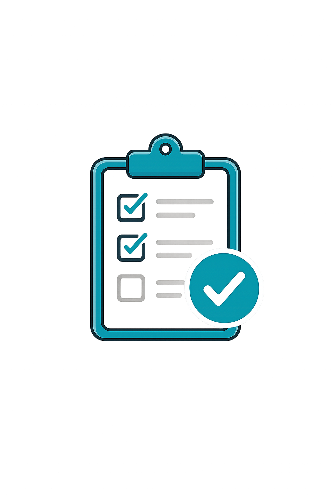

تكنولوجيا القيادة

اختبر معلوماتك في القيادة والسلامة المرورية من خلال مجموعة من الاختبارات التفاعلية المصممة لمساعدتك على تقييم مستواك وتعزيز فهمك للأنظمة المرورية.
اختبر فهمك لآلية احتساب النقاط والعقوبات المترتبة عليها.
قيّم معرفتك بأشهر المخالفات وكيفية تجنبها.
تعرّف على مدى إتقانك لمعاني اللوحات المرورية المختلفة.
اختبر معلوماتك حول القيادة الآمنة في مختلف الظروف.
اختبار يجمع جميع موضوعات السلامة المرورية في مكان واحد.
سيتم إضافة اختبارات تفاعلية مع تصحيح فوري للإجابات، واحتساب النتيجة النهائية، وإظهار شرح لكل إجابة لمساعدتك على تحسين مستواك.